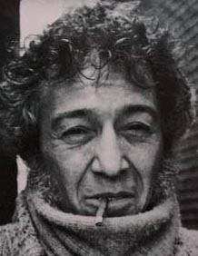

Алексис Корнер родился в Париже 19 апреля 1928 г. Это был странный космополитический мир, мир между двумя мировыми войнами. Его отцом был бывший австрийский кавалерийский офицер, а мать греко-турчанка. Родители отца Алексиса принадлежали к старой русской аристократии. В связи с тем, что отец занялся бизнесом, требующим постоянных разъездов, семья Корнера часто переезжала с места на место. Так что ребенком Алексис успел пожить во Франции, Швейцарии и даже Северной Африке, пока в 1939 г. семья не осела в Великобритании. Вместе с родителями Алексис получил британское подданство. Его личностное формирование как раз и прошло в среде среднего класса Западного Лондона.
Алексис был что называется "трудным ребенком",вылетев за непослушание из нескольких школ. В конце концов, он оказался в Finchden Manor, специализированном учебном заведении для "беспокойных" мальчиков с высоким интеллектом, где он изготовил свою первую гитару из куска фанеры и ножки стула. Алексис рано проявил музыкальные способности, с пяти лет родители отдали его учиться на фортепьяно. Лет в двенадцать он увлекся джазом, в основном, буги-вуги, а к середине 40-х уже играл музыку на полупрофессиональной основе.
Следующий поворотный момент в его карьере произошел в армии, куда его призвали после школы. Оказавшись в английском контингенте в Западной Германии, он впервые услышал блюз и ритм-энд-блюз, передававшийся по American Forces Network. Эта музыка определила всю его дальнейшую судьбу. После демобилизации он ненадолго вернулся к семейному бизнесу в области торгового судоходства, одновременно окунувшись в богемно-джазовую атмосферу, царившую в барах и винных погребках лондонского Сохо. Одно время поиграв в каких-то случайных составах, к концу 1949 г. он наконец очутился в джаз-бэнде Криса Барбера (Chris Barber) в качестве гитариста и исполнителя на банджо.
Harold Pendleton, впоследствии глава британской Национальной Джазовой Федерации, так охарактеризовал его тогдашний облик: "...странный, дикий, курящий черные сигареты, лохматый. Ярко выраженный иностранец, вообще непонятный. Он был похож на балканского террориста".
Крис Барбер включал в свои выступления получасовой ритм-энд-блюзовый сет в духе чикагских записей Тампа Ред и Биг Билла Брунзи, в котором сольные партии как раз мог исполнить Корнер. В принципе, именно Крис Барбер дал первоначальный толчок к популяризации блюза в Великобритании, познакомив с ним простых слушателей за пределами университетских кафедр. Впоследствии он устраивает и принимает участие в британских гастролях таких корифеев блюза как Мадди Уотерс, Биг Билл Брунзи, Сонни Терри и Брони Макги.
Однако ни о какой массовой популярности блюза в Великобритании того времени говорить не приходилось. Собственно говоря, альтернативой поп-музыки в Англии 50-х годов были два музыкальных жанра - трэд и скиффл. Трэдом называли послевоенный британский вариант традиционного джаза, включавшего черты нью-орлеанского диксиленда и постсвингового мэйнстрима. Скиффл был чисто английским жанром, хотя некоторые исследователи находят его истоки в сельской черной музыке девятнадцатого века. Это были простые, незатейливые мелодии, исполнявшиеся на подручных средствах (таких как, коробки, метлы, ящики и т.п.). Могли использоваться и акустические гитары. В бэнде Криса Барбера как раз начинал будущая звезда скиффл Лонни Донеган.
В 1953 г. Корнер знакомится с только что вернувшимся из Нового Орлеана трубачом и гитаристом Ken Colyer. На короткий срок тот присоединяется к бэнду Криса Барбера, в составе которого образуется скиффл-группа. В нее входили сам Крис Барбер (бас), Ken Colyer (гитара), его брат Билл (стиральная доска), Лонни Донеган (гитара, вокал) и Алексис Корнер (гитара, мандолина, губная гармоника). К слову сказать, Корнер был одним из первых музыкантов на Британских островах, освоивших губную гармонику. Вскоре Colyer уходит от Барбера, образуя собственную группу. К нему присоединяется и Корнер.
В июне 1954 г. с участием Корнера группа записала три блюзовых трека, вошедших в пластинку "Back to the Delta" (Decca LF 1196). Это были первые профессиональные записи Алексиса. На следующий год скиффл-группой Ken Colyer вместе с Корнером будет записан миньон с четырьмя композициями. Однако основной интерес в музыке для Алексиса составлял именно блюз, который он играл и в джаз-бэндах, и в скиффл-группах. Приобретя достаточной музыкальный опыт, Корнер раздумывал над созданием собственной группы, которая будет играть именно блюз. В этом ему помог Сирил Дэйвис (Cyril Davies), исполнитель на губной гармонике и двенадцатиструнной гитаре, и что самое главное, такой же ярый фанат блюза, как и сам Корнер.
Сирил Дэйвис родился 23 января 1932 г. в сельской местности в долине реки Колн на границе графства Бакингемшир в юго-восточной Англии. Подростком Сирил освоил банджо и укелеле. Окончив школу, он устроился работать в местную фирму, производившую катапультируемые кресла и другое оборудование по обеспечению безопасности авиаперелетов. В начале пятидесятых Дэйвис играет на банджо в исполнявшем трэд бэнде Steve Lane's Southern Stompers и исполняет там под двенадцатиструнную гитару песни Лидбелли. С Алексисом Корнером они стали пересекаться в 1953-54 г.г., когда тот стал самостоятельно выступать на клубной сцене. В конце 1955 г. Дэйвис организует Лондонский скиффл-клуб, который располагался в Roundhouse Pub в Сохо. Каждый вторник он исполнял там песни из репертуара Лидбелли под гитару и губную гармонику. Вокруг него образовалась группа энтузиастов. Выступать в Roundhouse стал и Корнер.
Впоследствии Корнер вспоминал: "Однажды Сирил сказал мне, что сыт по горло такой дребеденью, как скиффл, и предложил открыть блюзовый клуб". И в 1956 г. ими было открыто первое блюзовое заведение в Великобритании - "Blues and Barrelhouse Club" в том же Roundhouse Pub. Если в скиффл-клубе всегда было не протолкнуться от молодежи, то в первый вечер в блюзовый клуб пришло всего три человека. Однако Корнер с Дэйвисом не сложили руки и каждый четверг проводили там ночные концерты и джем-сейшны, постепенно место стало популярным, если не культовым.
В 1957 г. еще под эгидой скиффл-группы Алексиса Корнера ими были сделаны записи четырех треков, годом позже вышедших на миньоне "Blues from the Roundhouse" vol. 1 (Tempo EP, EXA 76). В записи принимали участие: Алексис Корнер (вокал, акустическая гитара), Сирил Дэйвис (губная гармоника, акустическая гитара, вокал), Chris Capon (контрабас), Dave Stevens (клавишные), Mike Collins (стиральная доска). В 1958 г. был записан следующий миньон "Blues from the Roundhouse" vol. 2 (Tempo EP, EXA 102) с песнями Лидбелли.
В 1958 г. проходят британские гастроли Мадди Уотерса (Muddy Waters) и единственный лондонский клуб, где он выступал, был именно Roundhouse. Там же регулярно играли, когда приезжали в Лондон, такие знаменитости, как Memphis Slim, Roosevelt Sykes, Sonny Terry и Brownie McGhee. Впоследствии Корнер вспоминал, что: "приходили и играли там масса народу, и у нас появился шанс глубже узнать блюз, аккомпанируя людям, чьи записи мы разучивали последние десять, пятнадцать лет, а то и больше. Аккомпанировать Jack Dupree, или Little Brother Montgomery, или Memphis Slim, или Roosevelt Sykes - это было то, что надо. Они были лучшими учителями, лучше не придумаешь, там было все. Конечно, критики подняли нас на смех. Но их насмешки нас абсолютно не трогали, потому что, честно сказать, те немногие, чье мнение нас интересовало,.. поддерживали нас. Мы просто работали, работали и работали".
Что касается Мадди Уотерса, то свои первые британские гастроли он провел в фолк-блюзовом ключе, исполняя акустический репертуар, популярный в американских университетских кругах. Но британская публика хотела услышать живьем настоящий чикагский саунд, который был записан на "чессовских" синглах 50-х г.г. Поэтому в следующий свой приезд Мадди в 1960 г. выступил в полном электричестве. Услышав такой драйв на концерте, Корнер и Дэйвис решили, что это то, что надо. В результате: из Roundhouse их выгнали на улицу. Ни один лондонский клуб не предоставлял им свою площадку для выступлений из-за слишком громкого, по меркам того времени, звука. В конечном итоге, осенью 1961 г. они на время присоединились к бэнду Криса Барбера, исполняя у него на концертах ритм-энд-блюзовый сет. Однако на повестке дня стоял вопрос о формировании собственной группы, которая должна играть именно электрический блюз. Ею и стала "Blues Incorporated".
Первая запись новой группы была сделана 17 января 1962 г. - в лондонской студии "Olympic" был записан блюз из репертуара чикагского гармошечника Билли Боя Арнольда "She Fooled Me". В то время этот трек выпущен не был, он увидел свет только через десять лет на компилятивном диске Корнера "Bootleg Him!". Помимо Корнера и Дэйвиса в записи принимали участие Keith Scott (клавишные) и Colin Bowden (ударные). Имя басиста история не сохранила.
С самого начала и за все время своего существования "Blues Inc." можно было назвать группой довольно условно. Музыканты постоянно сменяли друг друга, фанаты блюза приезжали поучиться и поджемовать с Корнером со всей Британии: это были Эрик Бердон из Ньюкасла, Брайан Джонс из Челмсфорда, Пол Джонс из Оксфорда и целая группа из дельты Суррея - Мик Джаггер, Кейт Ричардз и Эрик Клэптон.
Однако лондонские джазовые клубы не горели желанием приглашать выступать "Blues Inc.". И дело здесь было не только в громкости саунда, а в самой музыке, которую играла группа. Сказывалась корпоративная солидарность, стремление отстоять трэд, который стремительно терял популярность у публики. В начале 1962 г. группа Корнера несколько раз выступала, но в качестве вставных номеров на джазовых концертах. Такое положение их не устраивало. Выход предложил их тогдашний вокалист Арт Вуд, обратив внимание группы на расположенный в подвале под чайным магазином бар в западном пригороде Лондона Илинге, функционировавший то как обычная пивная, то как джазовая площадка. Корнер с Дэйвисом договорились с владельцем и открыли там ритм-энд-блюзовый клуб "Ealing Club". Открытие клуба состоялось ночью 17 марта 1962 г. в День святого Патрика. При полном аншлаге выступила "Blues Inc." в составе Алексис Корнер, Сирил Дэйвис, Keith Scott (клавишные), Andy Hoogenboom (бас), Дик Хексталь-Смит (саксофон), Арт Вуд (вокал) и будущий участник "Rolling Stones" Чарли Уоттс (ударные). В Илинге группа стала выступать каждую субботу.
С мая 1962 г. "Blues Inc." стала по четвергам выступать в известном лондонском клубе "Marquee", располагавшимся в Сохо. Причем если на их первое выступление там пришло чуть больше ста человек, то к сентябрю месяцу послушать группу Алексиса Корнера в клуб набивалось до тысячи посетителей. Основными вокалистами группы в то время были ведущий блюзовый вокалист Великобритании начала 60-х двадцатилетний лондонец Лонг Джон Болдри и чернокожий соул-певец Ronnie Jones. Периодически с группой Корнера выступал и Мик Джаггер, вызывавший у зрителей бурю эмоций своим откровенно сексуальным поведением на сцене, за что был прозван Сирилом Дэйвисом "Мэрилин Монро".
Растущая популярность "Blues Inc." привлекла внимание продюссера Jack Good. В 1958 г. Гуд создал на телевидении молодежную передачу "Oh, boy!", пригласив для участия в ней Клифа Ричарда, который с тех пор стал бессменной звездой британского шоу-бизнеса. Передача стала очень популярной среди тинэйджеров и обеспечила популярность многим звездам английского рокабилли. Увидев потенциал ритм-энд-блюза, Гуд предложил Корнеру записать долгоиграющую пластинку.
Вопреки своему названию, первый в истории альбом белого блюза - "R&B from the Marquee" был записан не на клубном концерте, а в лондонской студии фирмы Decca, расположенной в West Hampstead, за один день - 8 июня 1962 г. Британский блюз начинался как исключительно клубное явление, именно там получили первое признание многие будущие звезды этого направления, такие как Джон Мэйэлл или Yardbirds. Кстати свои ранние записи они сделали именно во время клубных концертов. В этом отношении Корнер решил не рисковать и записаться в студийных условиях, но воспроизведя программу и драйв живых выступлений.
Вспоминает присутствовавший на записи друг Алексиса Корнера, джазовый критик Charles Fox: "Студийная работа требует терпения даже больше, чем собственно таланта. Сначала вы занимаетесь тем, что несколько часов выстраиваете нужный баланс звука. Часто для этого необходимо рассадить музыкантов по разным местам, кого-то даже поместив за перегородку, тем самым нарушив физическое единство группы. Однако здесь все были рядом друг с другом.
Некоторые трудности были только у пианиста, Keith Scott. Ему нужно было поворачивать голову, чтобы видеть, когда певец остановится, поскольку никакого звукоусиления в студии не было.
Сирил Дэйвис, когда пел "I Got My Mojo Working", делал микрофонную стойку ниже, поскольку дрожал и трясся, играя на губной гармонике. У другого микрофона сидели Лонг Джон Болдри, Дик Хексталь-Смит и неигравший на записи гитарист Jim Sullivan, перекидываясь имбирным печеньем и выкрикивая ответные реплики.
На этом номере использовалась бас-гитара, на которой играл Teddy Wadmore. Штатный басист группы Spike Heatley воспользовался шансом посачковать.
Из операторской доносится обрывок разговора:
"Что, черт побрал, это за Mojo?"
Ближе к полудню вся группа пошла перекусить.
Последнее испытание всегда самое трудное. Бутылки пустеют быстрее обыкновенного. Дик Хексталь-Смит вытянулся над своим тенор-саксофоном в нечто среднее между Сонни Ролинзом и орлом над американским посольством. Алексис Корнер сидит умиротворенно, гитара покоится на его клетчатых брюках...
В самый напряженный момент начинается просто сюрреализм. Это случилось как раз на третьем дубле "Finkle's Cafe", когда гитара и саксофон обменивались музыкальными фразами. Несмотря на горящий красный свет, дверь студии открывается и на заходит маленькая девочка, одетая в серое. Прямо как Алиса, пришедшая на чай к Сумасшедшему Шляпнику.
В конце, как и в большинстве подобных случаев, чувствуется упадок сил. Все же четырнадцать вещей - за один день это круто; это больше, чем нужно для одной пластинки - записаны на пленку. Теперь время получить деньги, упаковать инструменты и вызвать такси.
Менеджер Jack Good нахлобучивает на голову свой котелок и отпускает последние шуточки, когда большими шагами выходит из операторской. Ударная установка убрана, бутылки выброшены".
Окончательный вариант альбома включал двенадцать треков, сочетая классику чикагского блюза (в основном, из репертуара Мадди Уотерса) и композиции собственного сочинения. В последних прослеживается сильное джазовое влияние, в первую очередь, любимого Корнером Чарли Мингуса. Собственно говоря, альбом явился своего рода компромиссом между музыкальными пристрастиями отцов-основателей "Blues Inc." - Алексиса Корнера и Сирила Дэйвиса, последний из которых воспринимал только традиционный блюз и отрицательно относился к современному джазу. По словам современников, саксофон он вообще считал инструментом дьявола.
Так или иначе, но "Blues Inc." была в то время на пике своей популярности в клубах. Многие начинающие блюзовые музыканты приходили поджемовать с ними. Среди остальных ритм-энд-блюзовых групп тогда у них конкурентов не было. В октябре 1962 г. группа записывает еще две вещи для промо-сингла, выпущенного в декабре фирмой "Lyntone" (LYN 298). Это был сочиненный Корнером и Дэйвисом драйвовый инструментал "Up-Town", а также аранжированная Корнером "Blaydon Races" с вокалом Nancy Spain. Нэнси была журналистом и радиоведущим, с Корнером они познакомились во время работы на BBC. Она стала ведущим обозревателем "Daily Express" и вела радиопрограммы "Женский час" и "Мое слово". Кроме того, несмотря на отрицательно настроенное общественное мнение, она была открытой лесбиянкой и жила с издательницей журнала "She" Joan Werner Laurie. Нэнси дружила со многими знаменитостями не только в Великобритании, но и в континентальной Европе. Среди последних была и Марлен Дитрих. Что касается самого Корнера, то он всегда был человеком широких взглядов, свободным от фобий и предрассудков. Он обычно говорил: "Есть только два типа музыки: хорошая и плохая", а остальное его не интересовало.
В ноябре 1962 г. альбом "R&B from the Marquee" был издан фирмой Decca на ее бюджетном лейбле "Ace of Clubs" (ACL 1130). В чарты популярности он не попал, однако сам по себе его выпуск ознаменовал начало новой эры в британской музыке - эры белого блюза. Однако в это же время творческие разногласия между Корнером и Дэйвисом достигли критической точки, в результате чего последний вышел из состава "Blues Inc." и создал собственную группу "Cyril Davies & R&B All-Stars". В нее вошли: Carlo Little (ударные), Rick Brown (бас) и Nicky Hopkins (клавишные). Первым гитаристом группы Сирила Дэйвиса был тогда еще никому не известный Джимми Пейдж. Что касается вокалиста, то им, в конечном счете, оказался Лонг Джон Болдри, за которого между Дэйвисом и Корнером развернулась настоящая борьба. Болдри ценил и хорошо относился к Корнеру, но выбрал Дэйвиса, так как не хотел быть одним из многих вокалистов у Корнера. В течение 1963 г. они сделали несколько записей, хотя до полномасштабного LP дело так и не дошло, регулярно выступали по клубам и приняли участие в Британском национальном джазовом фестивале. По мнению современников, группа обладала очень сильным потенциалом и могла бы составить конкуренцию "Rolling Stones"... если бы не трагическая смерть Сирила Дэйвиса от острой лейкемии 7 января 1964 г.
Уход Сирила Дэйвиса был закономерным, но достаточно болезненным для группы. Заменить его было некем, однако в то же время в группе появляется новая яркая личность, поддержавшая стремление Корнера играть более джазовую музыку. Им стал Грэм Бонд (Graham Bond). Бонд родился в 1937 г. с хронической астмой и ребенком часто страдал от приступов удушья. В детстве он учился играть на фортепьяно, одновременно заинтересовавшись и органной музыкой. В 14 лет Бонд занялся йогой, благодаря которой увлекся саксофоном. "Когда мне было 15, я решил собрать джаз-бэнд и, поскольку у меня была хроническая астма, я взялся за альт-саксофон, чтобы помочь укрепиться своим лёгким и дыханию". Постепенно Бонд стал известен на британской джазовой сцене и в 1960 г. познакомился с Диком Хексталь-Смитом. В начале 1962 г. Бонд появился сразу в двух номинациях в джазовом рейтинге журнала "Melody Maker". Однако к осени того же года Бонд решил изменить альт-саксофон на клавишные, в связи с чем ушел из джазового бэнда, в котором играл в то время. Тут как раз подвернулось приглашение Алексиса Корнера занять вакантное место. Стилистические пристрастия Бонда и Корнера совпадали, и Грэм согласился присоединиться к "Blues Inc.".
Обновленный состав группы, кроме Корнера, Дика Хексталь-Смита и Бонда, включал: Ронни Джонса (вокал), Джонни Паркера (клавишные), а также будущих звезд легендарного "Cream" - Джека Брюса (бас) и Джинджера Бейкера (ударные). При случае с ними также выступали несколько привлекательных чёрных бэк-вокалисток под названием "Velvettes". Кроме своей резиденции в "Marquee", они регулярно выступали в клубах таких удалённых от Лондона городов, как Манчестер и Ливерпуль.
В начале 1963 г. "Blues Incorporated" покинули свою резиденцию в "Marquee", перебравшись на новую точку во "Flamingo Club". Примерно в это же время Бонд, Брюс и Бейкер в промежутках начали играть как "Hammond Organ Trio". В перерывах между плотным концертным графиком "Blues Incorporated" нашли время сделать несколько сессий для BBC. Они выступили как на телевизионном шоу "6.25", так в радиопрограмме "Jazz Club". (Впоследствии композиция "Rockin'", записанная на радио, вошла в ретроспективный альбом Корнера "Bootleg Him"). В то же время у группы была сессия звукозаписи для фирмы "Decca" в её студии в West Hampstead. Записываясь вечером перед специально приглашённой аудиторией, "Blues Incorporated" исполнили 11 песен. К сожалению, из них были изданы только "Early In The Morning" и "Night Time Is The Right Time" (Decca LP "Rhythm & Blues", LK 4616, выпущено в октябре 1964 г.).
В конце февраля трио Бонда выступило само по себе в Манчестере, заработав больше, чем им могли предложить в "Blues Incorporated". Бонд понял, что возглавлять собственное трио будет в финансовом отношении намного более прибыльным, чем оставаться частью чужой группы, и после горячего спора с Корнером во "Flamingo" Бонд ушёл, прихватив с собой Брюса и Бейкера.
Несмотря на очередной удар судьбы, Корнер не сдался и восстановил ритм-секцию. На басу появился Chris Thompson, а за ударные сел бывший наставник Бейкера Phil Seamen. Последний к этому времени уже сидел на героине и работа в группе была для него источником средств на покупку наркотика. Кроме того, на сессии звукозаписи он мог привести свою собаку, имевшую привычку во время записи дублей мочиться на брюки зазевавшихся музыкантов. Томпсон также употреблял героин и вскоре был заменен другим музыкантом - Mike Scott. Место за альт-саксофоном занял Art Themen, по совместительству студент-медик, чьи знания были как раз необходимы из-за непредвиденных инцидентов, в которые время от времени попадали музыканты-наркоманы. Наркозависимость ряда музыкантов, а также постоянная стесненность в деньгах не способствовали созданию в группе доверительной дружеской атмосферы. Периодически возникали конфликты. Корнер ходил с напряженным осунувшимся лицом, только на сцене у него появлялась профессиональная улыбка. Опять же вопрос о записи очередного альбома оставался открытым.
Случайно Корнер знакомится с американским кларнетистом Joe Marsala, который работал на чикагскую Seeburg Corporation. Пустив в ход все свое обаяние, Алексис убедил его, что "Blues Inc." сможет записать такие классные композиции, что они будут играть в музыкальных автоматах на необъятных просторах всех Соединенных Штатов. В результате 10-12 мая 1963 г. в лондонской студии Lansdowne группа записала материал для нового альбома. Однако Корнер не был бы Корнером, если бы записал простенький коммерческий ритм-энд-блюз. Получившийся к концу 12 мая результат никак не ожидали увидеть ни Marsala, ни его хозяева из Чикаго. Это были двенадцать закрученных инструменталов, под которые ни на танцполе не поколбасишься, ни девиц не подцепишь. Как и следовало ожидать, сделка не состоялась. Эти записи увидели свет только через два года, когда каталог Seeburg был выкуплен фирмой Decca. Альбом под названием "Alexis Korner's Blues Incorporated" был выпущен ограниченным тиражом в июне 1965 г. на лейбле "Ace Of Clubs" (ACL 1187). Критика похвалила инновационное звучание диска, однако отметила, что альбом представляет интерес, в основном, для коллекционеров, а не для широкой публики. Собственно говоря, так оно и было.
Из двенадцати вошедших на диск инструменталов два были сочинены Паркером, один - Хексталь-Смитом, а остальные написаны или аранжированы самим Корнером. Открывающий альбом корнеровский "Blue Mink" явно намекал на эпическую композицию Телониуса Монка "Blue Monk" причем с явными отсылками к любимому Корнером Чарли Мингусу. Следом шла "Rainy Tuesday", самая продолжительная композиция на диске с замечательным соло Корнера на гитаре. Также необходимо отметить построенную на роскошном фортепьянном соло композицию Паркера "A Little Bit Groovy". Инструментал "Royal Dooji" был аранжированным Корнером вариантом знаменитой "Dooji Wooji" из репертуара оркестра Дюка Эллингтона, а "Preachin' the Blues" с весьма экзотическим ориенталистским звучанием основывался на одном из блюзов Мадди Уотерса. Во время той же сессии была записана не вошедшая в альбом и не издававшаяся в то время заводная песня Корнера "Taboo Man", полная сексуального бахвальства, впрочем вполне политкорректного. Также в мае-июне 1963 г. на той же студии были записаны еще два номера - традиционный дельта-блюз "See See Rider" (в аранжировке Корнера) и авторский инструментал "Blues a LA King", оба были изданы на сингле независимым лейблом King только в 1965 г. (KG 1017). Несмотря ни на что, жизнь продолжалась.
В августе 1963 г. из "Blues Inc." уходит Хексталь-Смит, чтобы присоединиться к группе Грэма Бонда. На его место пришел альт-саксофонист Dave Castle, также в то время к группе присоединился клавишник Malcom Saul из группы Eric Delaney. На повестке дня продолжал стоять вопрос о лидер-вокалисте. Собственные вокальные данные Корнер оценивал весьма скромно, даже назвав их "ужасными" в одном из радио-интервью. Он чувствовал себя некомфортно, когда ему приходилось петь со сцены. Однако ранней осенью 1963 г. Корнер обратил внимание на очередного демобилизовавшегося из армии черного американца, Herbie Goins, вместо выступавшего с ними раньше Ronnie Jones.
Однако первоначально место вокалиста "Blues Inc." занял не он, а George Bruno Money (более известный как Zoot Money). Как и его предшественник Грэм Бонд, он не только пел и играл в группе, но и исполнял свой собственный сет во время перерывов на выступлениях. Однако собственные амбиции не позволили ему долго оставаться в группе Корнера, в которой он пробыл месяца два. В конечном итоге, в конце октября 1963 г. к "Blues Inc." вместо него присоединяется Herbie Goins.
Goins был уроженцем Флориды и начал музыкальную карьеру еще в школьной группе. К тому времени как его призвали в армию, он уже успел выступить с такими гигантами, как B.B. King и Bobby Bland. Проходя службу в Западной Германии он вскоре собрал новую группу, которая давала выступления на американских военных базах. Там его заметил Eric Delaney и предложил перебраться в Лондон и присоединиться к своей группе. Уже в Великобритании, получив предложение от Корнера, Goins решил не упускать свой шанс и тут же согласился.
Тем временем, заранее не ставя в известность остальных членов группы, Алексис Корнер заключил контракт с небольшой независимой звукозаписывающей компанией Oriole Records на запись живого альбома, которая состоялась 23 февраля 1964 г. знаменитом ливерпульском бит-клубе "The Cavern". В Ливерпуле группа Корнера была уже хорошо известна, вызвав фурор на местном бит-фестивале в прошлом году. Свою известность клуб "Cavern" приобрел благодаря "Beatles", которые начали выступать в нем с декабря 1960 г., вернувшись из Гамбурга. Как музыкальное заведение клуб функционировал с 1959 г., первоначально там играли джазмены, в том числе и бэнд Криса Барбера. Свое название (cavern - англ. "пещера") клуб получил не случайно. Он располагался в подвале, где раньше был винный погреб. Внутри было темное тесное помещение с высокими сводчатыми потолками, вентиляция, также как и нормальное освещение отсутствовали. Очевидцы вспоминали, дышать в клубе было нечем, стены были буквально пропитаны потом, на концертах среди зрителей часто случались обмороки.
"Перед выступлением мы заглянули в паб и только потом обнаружили, что Oriole ведет запись, - впоследствии вспоминал Goins. - Мы набрались Fine Selection, отличным крепким элем. И когда мы оказались на сцене... первой вещью, что я там сделал, это сломал микрофон". Второй микрофон был у Корнера. Отступать было некуда и, несмотря на свое нежелание, он хриплым задыхающимся голосом начал петь "Overdrive". Это была его собственная песня, исполненная здесь непривычно жестко. Соло на саксофоне Dave Castle было поддержано органом Malcolm Sauls и гитарой самого Корнера. Импровизация уложилась меньше чем в четыре минуты, время получасовых звуковых экспериментов еще не пришло. Следующим номером Корнер объявляет свою собственную "Whoa Baby", "блюз в стиле Джона Ли Хукера", хотя вряд ли большинство аудитории знало кто это такой. После этого Корнер объявляет: "А сейчас я хочу представить вам того, кто действительно может петь. Вы слышали его в прошлый раз, когда он был здесь. Herbie Goins! ". После короткого инструментального выступления Goins начинает петь "Every Day I Have a Blues" на фоне органных и саксофонных импровизаций. Затем микрофон возвращается к Корнеру и он исполняет нетленную классику Мадди Уотерса - "Hoochie Coochie Man", добавляя соло на слайд-гитаре.
Вторая сторона изданной по итогам концерта пластинки открывается инструменталом "Herbie's Tune", названного в честь вокалиста группы, хотя фактически эта композиция является переработанной группой вариантом "Dooji Wooji". Здесь присутствует впечатляющее соло на ударных Mike Scott. После этого Корнер снова берет микрофон и исполняет "старую вещь Joe Turner" "Little Bitty Gal Blues", чтобы потом передать микрофон снова Goins, в заключение исполнившему "Well All Right" и "Kansas City".
На конверте вышедшего в октябре 1964 г. альбома "At The Cavern" (Oriole PS 40058) Корнер написал в аннотации: "Здесь люди на самом деле слушают тебя, они помогают тебе играть и петь на максимуме. С той минуты, как входишь в клуб "Cavern", ты уже знаешь, что тут будет удачное выступление. Все настолько дружелюбны, все хотят помочь тебе сделать все по максимуму".
Следующий альбом "Blues Inc." был записан в марте 1964 г. в Olympic Studios, располагавшейся в здании бывшей синагоги в лондонском Уэст-Энде. Незадолго до записи альбома в группе произошли очередные изменения - полностью сменилась ритм-секция. Теперь на басу играл Danny Thompson, а на ударных - Barry Howton, кроме того Malcolm Saul был заменен другим клавишником - Ron Edgeworth. На запись специально пришли не игравшие к тому времени в "Blues Inc." Хексталь-Смит и Art Themen.
Для Томпсона это был вообще первый опыт студийной работы. "Даже сейчас я не думаю, что стал бы играть по-другому по сравнению с той сессией, - впоследствии вспоминал он. - Помню, я был абсолютно восхищен окружающими меня людьми, все три саксофониста играли просто фантастично, и мне действительно нравилось работать с Алексисом и Херби. Иметь возможность исполнять "Woke Up This Morning" Би Би Кинга вместе с "Haitian Fight Song" Мингуса означало, что "Blues Incorporated" фактически отражало идеальное сочетание моих музыкальных пристрастий".
На диск было записано десять треков, из них только три песни: "Roberta" (традиционный блюз в аранжировке Корнера), и две вещи классиков уэст-коаст блюза - "Stormy Monday" Ти-Боун Уолкера и вышеупомянутая "Woke Up This Morning" Би Би Кинга. Остальные семь треков были инструменталами, включавшими как аранжировки джазовых стандартов Дюка Эллингтона и Чарли Мингуса, так и собственные произведения Алексиса Корнера и ранее игравшего с группой Грэма Бонда.
Во время записи альбома царила непринужденная и раскованная атмосфера. Вспоминает ударник Barry Howton: "Я сел за ударную установку в начале первой сессии и очень беспокоился, смогу ли я передать дух живых выступлений. Кроме того, играть в десять часов утра в практически стерильных студийных условиях мало способствовало для создания настоящего свинга. Алексис понял эту проблему и как по волшебству извлек бутылку бренди, из которой мы щедро добавили в наш кофе. В результате уровень адреналина быстро стал расти, мы полностью погрузились в музыку и я считаю, что удачно воспроизвели наше живое звучание".
К нему присоединяется и вокалист Herbie Goins: "Атмосфера была очень расслабленной, и Алексис не беспокоился о том, что группа делает ошибки; основной задачей было сохранить на записи живое клубное звучание. Если кто-то из нас сильно лажался, мы просто останавливались и перезаписывали трек заново; это не имело особого значения, потому что все было весело".
Корнер шел на спонтанные музыкальные эксперименты прямо во время записи. Вспоминает саксофонист Dave Castle: "Утром перед второй сессией звукозаписи я заскочил в магазин музыкальных инструментов в Уэст-Энде и прикупил флейту, просто чтобы потренироваться - в то время было более-менее важно играть еще и на флейте и (или) кларнете, если вы хотели работать регулярно - и я решил ее купить и научиться на ней играть. Чернила на товарном чеке еще не просохли, как Алексис предложил мне использовать флейту в "Stormy Monday".
Альбом, получивший название "Red Hot From Alex" был издан в июне 1964 г. на лейбле Transatlantic (LP TRA 117) и в целом был положительно воспринят музыкальной критикой. В частности, обозреватель "Record Mirror" Patrick James в рецензии на диск отметил: "Алексис Корнер и "Blues Incorporated" должны быть на вершине популярности. Я считал, что они добьются этого, по крайней мере, 18 месяцев назад, но что-то всегда было против них. Если вы хотите услышать, как играет эта группа (хотя и в слегка измененном составе), это отличная новая пластинка от фирмы Transatlantic под названием "Red Hot From Alex". Они никому не подражают, а с этим составом никто не в силах им подражать".
В сентябре 1964 г. группа записала две вещи "I Need Your Lovin'" и "Please, Please, Please" для вышедшего через два месяца сингла (Parlophone R 5206). Обе вещи были классикой набиравшего популярность стиля соул и входили в репертуар Don Gardner & Dee Dee Ford и такого корифея жанра, как Джеймс Браун, соответственно. Что касается последнего, то в 1962 г. он объявил себя "соул-братом №1" в Америке и действительно пользовался огромной популярностью среди черной аудитории. Интересно отметить, что соул-музыкой увлекались в то время даже такие британские группы, как "Rolling Stones", предпочитая записывать композиции в этом стиле более брутальному ритм-энд-блюзу.
В ноябре 1964 г. группа сделала записи на BBC в смешанном составе: сам Алексис Корнер, Herbie Goins, Дик Хексталь-Смит, Ray Warleigh (альт-саксофон), Danny Thompson (бас) и Terry Cox (ударные). В основном, исполнялись вещи с вышеупомянутого сингла, а также с двух последних альбомов. Кроме того, в эфире Корнер дал пару коротких интервью. На вопрос ведущего о группах, исполняющих коммерческий ритм-энд-блюз он, в частности, ответил: "Я думаю, это слишком малая часть блюза в целом. То, что происходит с британской блюзовой сценой, я чувствую, люди взяли кусочек, можно сказать десятилетний период чикагского блюза с 1945 по 1955 г.г., и уверяют нас, что "Это Ритм-энд-блюз!". Фактически, это очень малая часть всей ритм-энд-блюзовой сцены, простирающейся от Louis Jordan до Marta & The Vandellas". На вопрос о том, является ли ритм-энд-блюз заметным явлением на британской поп-сцене, Корнер ответил: "Отнюдь нет. Я бы сказал, что это именно британский вариант ритм-энд-блюза, который в настоящий момент занимает небольшую нишу на поп-сцене. Настоящего прорыва пока не произошло". Однако Алексис оптимистично смотрел на жизнь и продолжал работать.
В тот же год возобновилась деятельность Алексиса на BBC в качестве музыкального ведущего. Стоит отметить, что еще в середине 50-х гг. Корнер вел программы на радио, посвященные таким титанам джаза, как Майлс Дэйвис, Чарли Мингус, Кид Ори и Каунт Бэйси. В 1964 г. с Корнером связался продюсер Jeff Griffin, которому было поручено организовать пятнадцатиминутную блюзовую программу на BBC, причем руководство компании полностью отдало ему на откуп содержание и формат передачи. Лучшей кандидатуры, чем Корнер он не видел. В результате Алексис согласился вести программу "Rhythm & Blues with Alexis Korner". Успех передачи упрочил его положение в шоу-бизнесе и способствовал подписанию контракта с лейблом Spot Records на выпуск одного альбома весной 1965 г.
К этому времени "Blues Inc." были квартетом, куда, кроме самого Корнера, входил принимавший участие в записи предыдущего альбома басист Дэнни Томпсон, ударник Terry Cox и 24-летний вокалист Duffy Power. На четырех треках к ним присоединились тенор-саксофонист Alan Skidmore и тромбонист Chris Pyne.
К тому моменту, как Даффи Пауэр присоединился к бэнду Алексиса Корнера, он был уже достаточно известной фигурой в британских ритм-энд-блюзовых кругах. Урожденный Raymond Howard, в 1956 г. он вместе с друзьями организовал скиффл-группу "Duffy Howard & The Amigos". Имя "Даффи" было взято с попавшейся на глаза афиши фильма с участием актера Howard Duff. Группа исполняла скиффл и вещи Элвиса Пресли. В 1959 г. когда группа называлась "New Vagabonds", их заметил импресарио Larry Parnes и подписал с ними контракт. В то же время умер Tyrone Power и веривший в приметы и предзнаменования Ларри решил, что к псевдониму "Даффи" должно прибавиться еще и "Пауэр". Группа имела успех и в 1962 г. после полудюжины синглов на лейбле Fontana Даффи решил направить свою энергию в другое русло и, уйдя от опеки продюсера, начал позиционировать себя как ритм-энд-блюзового певца и исполнителя на губной гармонике.
В течение 1962-67 гг. Пауэр выпустил несколько сорокапяток на принадлежащем компании EMI лейбле "Parlophone". В 1963 г. вместе с квартетом уже упоминавшегося Грэма Бонда им была записана битловская "I Saw Her Standing There". В 1964 г. Даффи выступал с такими группами, как "Paramounts", "Flee-Rekkers", "Fentones" и сделал ряд демо-записей собственного материала в сотрудничестве с гитаристом Джоном Маклафлином. В начале 1965 г. Пауэр записал для американской фирмы Jamie собственную композицию "Love's Gonna Go". Вещь понравилась Алексису Корнеру, и он решил встретиться с автором. На никогда ранее его не видевшего Пауэра он произвел неизгладимое впечатление. Корнер ему только что в отцы не годился, был прекрасно образован и просто излучал харизму. Даффи исполнил несколько своих вещей и был поражен, когда при следующей встрече через несколько дней Корнер сыграл ему одну из них. Алексис купил у Даффи несколько его композиций для собственного исполнения и привлек его к участию в очередном студийном проекте, которым и стал альбом "Sky High" (Spot LP JW551).
Название альбома, надо сказать, было показательным. Ryemuse Studio, где с апреля по июнь 1965 г. проходила запись, располагалась как раз над аптекой на престижной Сауф Молтон Стрит, так что музыканты были с избытком обеспечены качественной марихуаной, без которой студийная работа даже и не начиналась. Из-за ограниченного финансирования записи проходили поздно ночью, и, по воспоминаниям продюсера диска, однажды привлеченные шумом к ним зашли выпить чашку чая пара полицейских. Из двери студии выплывали клубы отнюдь не табачного дыма, но тогда все обошлось. Более того, когда блюстители порядка уходили, один заметил: "Да, вы настоящие музыканты".
Диск открывается тремя композициями Корнера/Пауэра, сыгранных базовым составом "Blues Inc" в фолк-блюзовом ключе. Пауэр в полной мере демонстрирует здесь как свои вокальные способности, так и класс игры на губной гармонике. Следующим традиционно идет блок джазовых стандартов, исполненных с участием духовой секции, включающий классику Чарли Мингуса "Wednesday Night Prayer Meeting" и "Yellow Dog Blues" Хэнди. Непосредственно ритм-энд-блюзовая составляющая предсталвена двумя треками из репертуара Биг Джо Тернера с вокалом Даффи - "Oo-wee Baby" и "Louise". Не был забыт и традиционный блюз Дельты: Корнер записал на диск "Big Road Blues" Томми Джонсона - получившего известность в конце 20-х гг. легендарного гитариста с берегов Миссисипи. Завершают альбом три великолепных инструментала, написанных Корнером и исполненных им сольно на акустической гитаре.
Общее настроение альбома достаточно точно передал продюсер пластинки Jack Winsley, написав в аннотации к первому изданию, "блюз, который вы услышите на этой записи, - искреннее выражение внутренних чувств. Каждый представленный музыкант/певец открыто показывает, что он чувствует. Что бы это ни было, будь то "деревенские" настроения как в "Louse Louse" или современные джазовые интонации как в "Honesty", мы с полным правом утверждаем, что это, тем не менее, блюз. Кроме того, мы пытались представить звучание "Blues Inc." так, как они могли играть перед аудиторией. На этой записи присутствует потрясающая спонтанность. "Blues Inc." всегда более сконцентрированы на эмоциях, чем на чёткой технике исполнения. Запомните, что от музыкантов всегда требуется, чтобы они "пытались что-нибудь больше", чем просто играть правильно. Таким путём вы можете делать много ошибок, но у вас действительно получается настоящая музыка. "К чёрту последствия!" - постоянный девиз группы. Вы ничего не можете контролировать, что бы вы ни пытались: ни ошибки, ни музыку. Может быть, это выглядит слишком далёким от того, чтобы быть принципом публичного выступления, но по крайней мере, это ключ к тому, что чувствует группа".
Пожалуй, это оказался самый провальный в коммерческом отношении проект Алексиса Корнера. Spot Records не имела своих дистрибьюторов и вообще была практически никому не известной компанией. В результате вышедший в апреле 1966 г. альбом так и не дошел до широкого слушателя. Ситуация улучшилась только к 1967 г., когда данный диск в сокращенном варианте под названием "Alexis Korner's Blues Incorporated" был издан на Polydor.
В течение 1965 г. группа периодически записывалась для BBC. Так в апреле еще с вокалом Herbie Goins была записана роскошная версия "I Got A Woman" Рэя Чарльза. В мае тем же составом, что и диск "Sky High", исключая Даффи Пауэра, группа исполнила отражавшую настроения холодной войны "Oh Lord, Don't Let Them Drop That Atomic Bomb On Me" Мингуса и корнеровский "Blues a la King".
В декабре 1965 г. и январе 1966 г. группа записала для BBC еще несколько композиций и продолжала выступать в клубах. Однако музыкальная мода менялась. Носящая скорее элитарный характер музыка, исполнявшаяся "Blues Inc", была мало интересна широкому слушателю. У молодежи были другие кумиры. В первую очередь, что "Rolling Stones", "Yardbirds", "Animals", не говоря уже о "Beatles". Конечно, Корнер не остался без работы. Он был весьма уважаем в кругах профессионалов, но содержать полноценную группу не мог. Томпсон и Кокс выступали с ним в течение 1966г., но больше уже как сопровождающие музыканты. Изданный годом позже альбом с записями этого периода был выпущен под именем Алексиса Корнера, а не "Blue Inc." и открывает, по существу новую страницу в его творческих исканиях, а это уже другая история...
ALEXIS KORNER'S BLUES INCORPORATED:
"R&B FROM THE MARQUEE" - 1962 / 2006 (Decca / Castle / Sanctuary Records
CMRCD 1371, UK)
Total time: 55:21
Помимо соответствующего альбома (LP Decca / Ace Of Clubs ACL 1130, 1962
г.) на диске записаны 7 бонус-треков, включающие промо-сингл (Lyntone LYN 298,
1962 г.), студийные аут-тэйки и записи на BBC в 1962 г.
"RED HOT FROM ALEX" - 1964 / 2001 (Transatlantic / Castle / Sanctuary Records
CMRCD 293, UK)
Total time: 31:15
"AT THE CAVERN" - 1964 / 2006 (Oriole / Castle / Sanctuary Records CMRCD 1372,
UK)
Total time: 60:58
На диске записан концертный альбом (LP Oriole PS 40058, 1964 г.), а также
12 бонус-треков, включая сингл того же периода (Parlophone R 5206) и ранее
не издававшиеся записи на BBC в ноябре 1964 г.
"ALEXIS KORNER'S BLUES INCORPORATED" - 1965 / 2006 (Decca / Castle /
Sanctuary Records CMRCD 1373, UK)
Total time: 52:31
На диске записан альбом 1963 г. (был издан только в 1965 г., LP Decca /
Ace Of Clubs ACL 1187) и 6 бонус-треков: сингл (King KG 1017,
"SKY HIGH" - 1966 / 2006 (Spot / Castle / Sanctuary Records CMRCD 1416, UK)
Total time: 76'28
На диске содержится полная версия одноименного альбома (LP Spot Records
WJ551, 1966 г.), а также 10 бонус-треков, содержащие записи для BBC 1965 -
начала 1966 гг., пять из которых ранее не издавались.
© 2007 С.А. Исправников